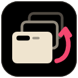

Tab Cycle
Tap Alt+Q to jump back to your last tab. Hold Alt and press Q again to see every tab, most recent first.
Shortcut
Checking…
Tap it to flip between your two most recent tabs. Hold the first key and keep pressing the second to see all tabs; let go to switch, or press Esc to cancel. Adding Shift goes the other way.
Settings
Fallback timeout (ms)Used where letting go can't be detected: browser pages like settings and the new tab page, or with the address bar focused.
Advanced: use Ctrl+Tab instead
For experienced users. Proceed at your own risk.
- The browser doesn't let extensions take Ctrl+Tab, so this is done by running a command in the browser's developer console.
- It replaces the browser's own Ctrl+Tab (next tab to the right) for as long as this extension is installed.
- Only paste code into a console when you understand it. This snippet only changes this extension's two shortcuts; read it before running it.
- To undo, set a different shortcut with Change shortcut above, or remove the extension.
- Press F12 and open the Console tab. If pasting is blocked, type
allow pastingand press Enter. - Paste this and press Enter, then come back here.
Recent activity
What each press did and why. If something misbehaves, copy this into your report.
Nothing yet. Use the shortcut in a tab, then come back.
Everything stays in your browser. Tab order, previews and this log live in memory and are cleared when the browser closes. Nothing is sent anywhere, and there are no analytics.